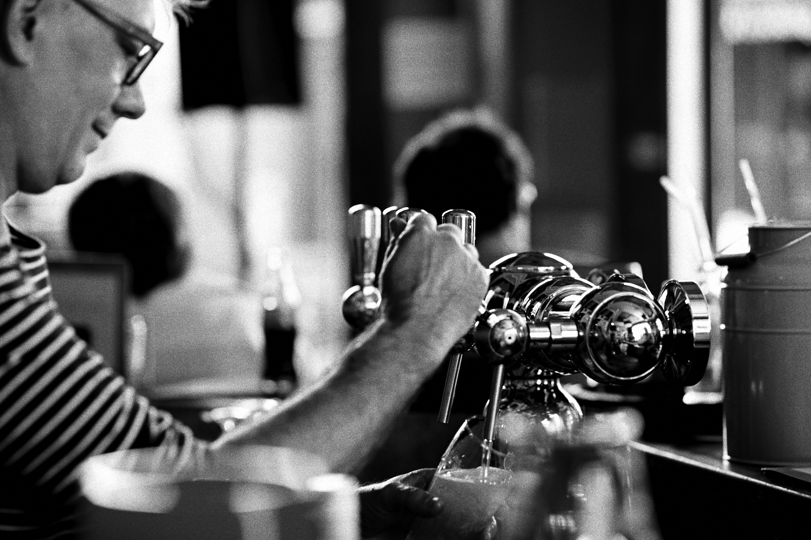

Buurt Praat Ambiance- en stamcafe op het Antwerpse Zuid!
Pacificatiestraat 49 / alle dagen open vanaf 16 uur, zondag (terrasseizoen) vanaf 12 uur.
Op deze pagina's krijgt U een indruk van ons café, wie zijn we, wie werkt er zoal? Wanneer is er iets speciaals te doen (optreden of zo)? Wat staat er op de kaart en wat mag dat kosten ? Alle fotos zijn aanklikbaar, u kan uw vragen, opmerkingen en liefdesbetuigingen kwijt via de contactpagina. Kijk rustig rond, laat eventueel een berichtje achter en kom er daarna eentje drinken in De Nieuwe Linde ! Have fun!
(22-01-2018)De feestdagen zijn stillekesaan verteerd en we hebben het allemaal weer overleefd, oef. Onze voorraad Leffe Winter is intussen volledig opgedronken en uit de wisseltapkraan loopt nu een pikdonker keilekker seizoensbier van de 'Antwerpse Brouwcompagnie' (Seef, Bootje's bier...): de "Nonkel Pater". Een bier in de stijl van de beste donkere trapistenbieren, nog tot de lente weer in het land is te verkrijgen in De Nieuwe Linde, van het vat en al!
(18-11-2017)Ons nieuwe seizoensbier van't vat is momenteel de lekkere Leffe Winter , een echt smaakvol donker abdijbier, een heel aangename dronk om de koudere avonden niet alleen te verzachten maar ook om te genieten van de gezelligheid die deze kunnen bieden.
(18-11-2017) Sinds enkele dagen hangen er aan onze muren 3 nieuwe werken. Gianni Skaii zag beelden van de Servische oorlog -een aangeschoten en neerstortend vliegtuig- en werkte dit uit in 2 grote schilderingen, de aandachtige kijker merkt meteen dat het ene werk een uitgewerkte versie is en het andere eerder de aanzet. Mooi om te zien hoe ideeën in verschillende fazen evolueren. Eerdaags zet ik nog foto's op de "onze muren" pagina, maar tussen pot en pint zijn ze natuurlijk reeds te bewonderen in uw café.
(06-11-2017) Ook meteen even meegeven: onze eindejaars sluitingsdagen zijn zoals steeds 24/25 en 31 december 2017, alsook 1 januari 2018.
(06-11-2017) Lang geleden dat ik hier nog eens iets schreef zeg, 't zal nog eens tijd worden peins ik. Onze huidige ploeg medewerkers zijn op de schoon volk pagina te bewonderen en uiteraard ook 'live' achter de bar, zij het niet allemaal tegelijk natuurlijk. Zoals u terecht opmerkt zijn ze allen mooi en jong en bieden dus een perfect tegenwicht voor mijn ietwat rijpere aanwezigheid.
(03-04-2017) Gisteren organiseerde WTC 2018 in ons café de uitzending van De Ronde Van Vlaanderen op groot scherm, na onze ochtendlijke trainingsrit. De opkomst was zeer goed, de sfeer zat er meteen in, en we zagen met z'n allen Phillip Gilbert naar een welverdiende overwinning fietsen. Leuk.
(03-04-2017) Vanaf deze maand zijn er enkele aanpassingen op onze prijslijst: De spaghetti wordt 12 euro, de huiswijn 3,80 per glas/ 19 per fles en de suggestiewijn 25 per fles. Maar u weet natuurlijk dat u steeds ruime porties en goedgevulde glazen krijgt in De Nieuwe Linde.
(03-04-2017) Dat de winter plaatsmaakt voor de Lente betekent ook dat ons winterbier van de tap (st.Bernardus Abt was dat) nu vervangen is door het lentefrisse SEEF van't vat (25 cl- 2.70,-). Alle info over de bieren van "De Antwerpse Brouwcompagnie" en hun nagelnieuwe brouwerij op het eilandje vindt u hier.
(03-04-2017) Sinds dit weekend is het kakelverse terrasseizoen in gang getrapt en is De Nieuwe Linde weer volledig omgeven door ons grote terras. Zoë en ik sleurden het uit de kelder en na een hogedrukbeurt staat het weer klaar om u en de lente te ontvangen.
Heeft U vragen, opmerkingen, sugesties, mededelingen of wilt u gewoon zeggen dat U ons graag ziet? Stuur gerust een emailtje: (hier klikken)
Adres: De Nieuwe Linde Pacificatiestraat 49 2000 Antwerpen. (zuid, tussen de lambermontplaats en het justitiepaleis, recht aan het tramperron) Telefoon: 03/248.14.86